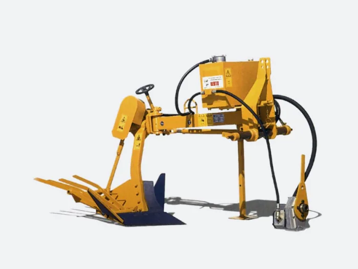

Sterrapiante
Per sterrare a radice nuda piante da frutto, viti, rose, semenzai, pioppi, carpani, tigli. Totalmente idraulico, con spostamento del vomere fuori carreggiata fino a un metro, secondo la larghezza della trattrice. Attacco universale a tre punti, PTO 540 giri.
| Versione | Trattore | Alt. x lung. x larg. | Peso |
|---|---|---|---|
| MOD. 80 | 40/68 HP | 140 x 210 x 90 cm | 350 kg |
| MOD. 85 | 60/100 HP | 160 x 230 x 110 cm | 500 kg |
| MOD. 100 | 100/150 HP | 170 x 280 x 120 cm | 680 kg |